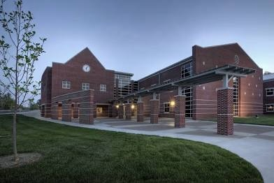

|  |
Hello! My name is Mackenzie Dockery and I currently live and teach in Beaver Dam, KY. I am a third year 1st grade teacher at Beaver Dam Elementary and I am currently pursuing my Master's Degree in Library Science at Eastern Kentucky University. I plan to finish my degree next year and eventually transition into the role of Library Media Specialist! This is where I work! I have taught here for 3 years. |
Beaver Dam Elementary School, as shown above, is located in Beaver Dam, Kentucky. It serves students from pre-K through 6th grade in the Ohio County School District with an enrollment of around 540–600 students. The school has a diverse student population and a student-teacher ratio of about 15–17:1.
|
My husband Chevy and I are expecting our first child, Cade, in October! |
|
In my free time I enjoy reading and drinking coffee! |
This website will document the road to earning my Master's Degree in Library Science and showcase the learning I achieve along the way. It will highlight things like student reading resources, library decor ideas, possible student project ideas and lesson plans, newsletters, and more!